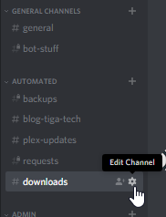
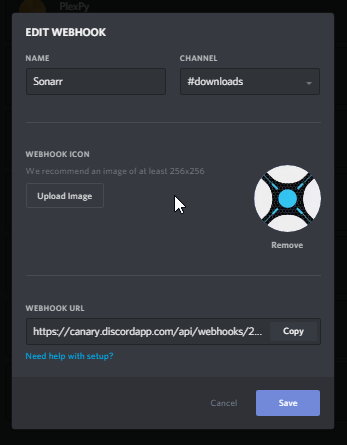
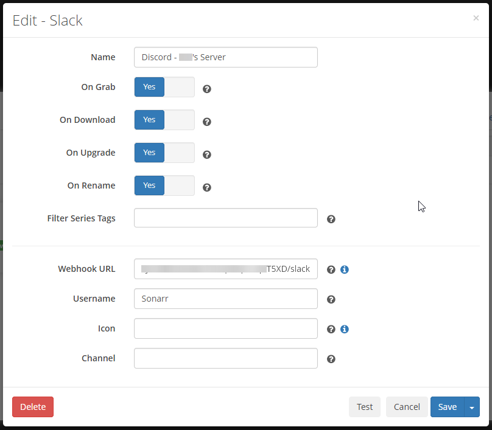
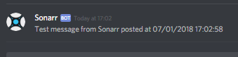

Part 1 of a Discord notifications series.
I’ve had this running for a while and it works flawlessly, I’m very pleased with it.
After having a few people ask me how it’s done I decided it’d be best to make a post.
This is made extremely simple thanks to Sonarr’s built-in support for Slack notifications and Discord’s built-in support for Slack webhooks. Of course Radarr and Lidarr support this too, as they are forks of Sonarr.
I’ll show you how to do this in Sonarr, but Radarr is identical and Lidarr is very similar, so you can follow this same process for each *arr.
Go to Discord and open the settings of the channel that you want Sonarr to report to. I created a channel called “downloads” just for these services.

Click “Create Webhook”, and you’ll see something similar to the following:

As you can see mine has already been configured, but all you need to do is set the name, upload an image if you’d like (icons are at the bottom of this post) and then copy the webhook URL.
Now move over to Sonarr and navigate to Settings > Connect > Add > Slack.
Add a name for the connection. This isn’t reflected in the notifications, so choose whatever you want.
Choose the type of notifications, and any series filters you want.
Now paste the webhook URL you copied earlier into the appropriate field in Sonarr, then go to the end of the URL and append /slack. This tells Discord to interpret the webhook as Slack would.
Type the webhook name in the username field and leave the last two empty.
Here’s my configuration for reference:

Click “Test”, then look back in Discord. You should see something like this:

Success!
Note: This method can be used for anything that supports Slack but not Discord, it’s not limited to Sonarr and it’s forks.
Icons:
These are the icons used by each project on their GitHub page.
I always welcome feedback on my posts, please contact me if you have any. I’m also happy to answer any related questions if I know the answer.